|
Rebuilding
Afghanistan Pot by Pot: The Turquoise Mountain Foundation and the
Potters of Istalif
by Noah Coburn and Ester Svensson
The Turquoise Mountain Foundation is a non-profit, non-governmental
organization which invests in Afghanistan’s traditional crafts,
historic building and landscapes in order to preserve cultural heritage,
improve living conditions and create economic opportunities. The
Turquoise Mountain Foundation believes that the preservation of
Afghan culture is vitally and urgently linked to the country’s
much needed economic, social and urban regeneration. The Foundation
currently has a ceramics school in Kabul and a Resource Center in
the town of Istalif, where Afghan potters come daily to learn safer,
more effective techniques. The aim of the Turquoise Mountain’s
work is not to alter traditional skills, but to preserve Afghanistan's
crafts while opening them to wider markets. www.turquoisemountain.org.
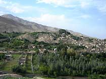Kabul
is a city teeming with construction. Returning refugees contribute
to the sprawl of the city, while international companies and governmental
organizations build taller and taller buildings downtown. Infrastructure
struggles to keep pace; water and electricity are scarce, traffic
crawls down unpaved streets and even the richest neighborhoods lack
plans for sewage. Outside of Kabul the pace of life is slower. Traditional
towns and villages have changed little in the past hundred years.
Reconstruction and the impact of foreign aid have been minimal and
much of the country struggles with poverty and hunger.
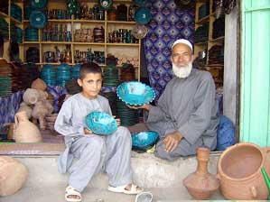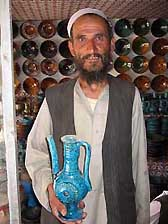
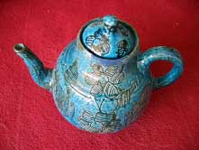Areas
such as the Shomali Plain north of Kabul were devastated by fighting
with the Taliban and have been very slow to rebuild. Many of these
towns have struggled to reconstruct themselves and have been forced
to find their own means of economic development. For Istalif, a
town an hour and a half north of Kabul, in the foothills of the
Hindu Kush, this means returning to their traditional crafts to
drive their own rebuilding process. Istalifi potters in particular
have come back to rebuild their kilns and return to methods of potting
which have been passed from father to son for generations.
Istalif has long been renowned for its gardens and traditional
crafts. The Empire Babur praised the beauty of Istalif’s gardens.
Before the Soviet invasion, Istalif was a popular spot for tourists
and Kabulis to visit on the weekend. However, Istalif’s location
also made it a target for military strikes during Afghanistan’s
25 years of war.
As a primarily Tajik town, at the edge of the
mountains and therefore an ideal route between Kabul and the
safety of the hills for resistance fighters, the Taliban saw
Istalif as a threat to their rule of Kabul. As a result after
weeks of fierce fighting, the Taliban took control of the
town. They gave the residents a few hours warning and then
slowly and methodically buried or razed every building in
town.
Most of the potters in Istalif fled to Kabul, many walking
for almost a month to avoid the intense fighting while carrying
all their positions. Most remained in Kabul, living in poverty
with relatives or in squatter villages, until the fall of
the Taliban. Almost immediately after Hamid Karzai’s
interim government arrived, Istalifi potters began to move
slowly back to their destroyed homes and returned to what
they do best, making pots. |
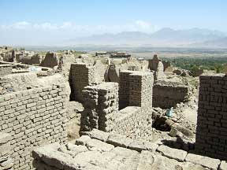
The Hindu Kush Mountains above some of the
still unrepaired houses of Istalif. |
Istalifi Pottery:
|
The methods of the Istalifi potters have changed little
despite the upheaval of the past three decades. They use a
mixture of earthenware clays that they collect in the mountains
above Istalif and bring to their workshops by donkey. To the
clay they add a plant fiber called gul-e loch, which makes
the clay more workable, but also makes their pots much more
brittle. They do all their measuring by eye and then the clay
is mixed together by stamping it with their feet for between
two and four hours.
The Istalifi potters are masters on the kick wheel and traditionally
make a variety of bowls and plates. They throw off a hump
and often produce as many as 50 bowls an hour when they are
pressed for time. Since the 1970s however, they have increasingly
made candlesticks and other decorative objects, which both
foreigners and visiting Kabulis purchase. |
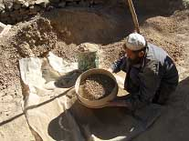
Sieving the clay
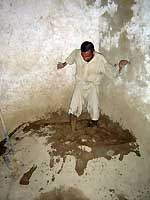
mixing clay
|
|
The unfired pots are then dipped into a white slip containing
chakhma, or ground quartz, and a white clay. The potters then
use three different glazes. The most popular, sundur, is a
beautiful, but also highly toxic lead glaze. By working with
the Turquoise Mountain Foundation and other non-profit organizations,
the potters have come to realize the danger of the lead in
this glaze and are beginning to use it less. In the past,
the potters used an alkaline glaze called ishkor, made from
the ash of a mountain bush found north of the Hindu Kush.
Mixed with copper this produces a beautiful turquoise glaze
for which Istalif has long been famous.
|
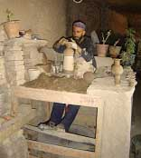
Potter using kickwheel
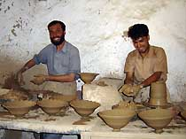
Istalif potters
|
|
The potters fire in traditional updraft kilns made with house
bricks and clay. The kilns are fired for between five and
seven hours, requiring over a thousand pounds of wood. The
potters pack the kiln using a series of tripod stilts. This
allows them to pack an incredible number of pots upside down
into rather small kilns, but leaves three small scars on each
pot.
|
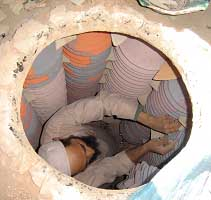
A potter packs his kiln |
The Challenges:
While Istalifi potters have worked hard to revive their traditional
crafts they still face severe challenges, which the Turquoise Mountain
Foundation is working with them to overcome.
Currently the Istalifi pots are brittle and impossible to export
to wider international markets. Much of this is due to the fact
that their wood kilns do not reach high enough temperatures and
are very difficult to control. The Turquoise Mountain Foundation
is currently working with a group of potters, teaching them how
to build gas kilns. These potters will then build a gas kiln at
TMF Resource Center, which will be available to all potters. Micro-lending
programs will then allow groups of potters to construct their own
cost-effective and more environmentally-friendly kilns. Such shared
kilns will allow the potters to produce less brittle pots, will
help slow the deforestation problem that confronts much of rural
Afghanistan, and make it more economically viable for the potters
to remove the tripod stilts.
| The Resource Center also serves as a place where
visiting ceramists can come and work with the potters of Istalif.
The Resource Center provides workshops for the potters that
emphasize the use of safer materials and the dangers of lead-based
glazes. Pottery remains a central part of the social organization
of the village. Beyond their work with potters, TMF is also
establishing several social programs that are run out of the
Resource Center including literacy classes and workshops on
business development. |
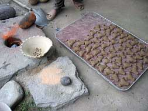
Above on the right are the tripod stilts that
the potters use in stacking
and in the upper-left some of the lead-based glaze being ground.
|
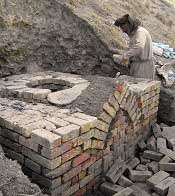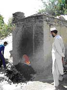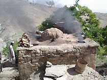
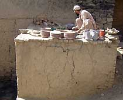
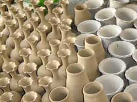
 |
The Turquoise Mountain Foundation’s work in Istalif
began by primarily aiding the potters and their families,
but the unique history and geography of Istalif are allowing
traditional crafts slowly to revive the economy of the town.
This is a town which can be reconstructed, primarily by relying
on the appeal of their ancient craft. The Turquoise Mountain
Foundation is in the process of building a visitor’s
center near the town bazaar. This center will have museum
displays about the history of Afghan pottery and will also
be a place for the potters to display their work for visitors
from Kabul and abroad.
The Turquoise Mountain Foundation is in need of continued
support for its work with the potters of Istalif and other
traditional Afghan crafts. To find out more about Turquoise
Mountain’s work in Istalif or to make a financial contribution
please contact us at
ceramics@turquoisemountain.org. You may also contribute
online at our website www.turquoisemountain.org.
|
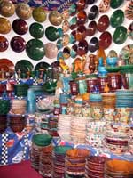 |
Images & article courtesy The
Turquoise Mountain Foundation, Kabul.
More Articles |